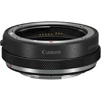

Canon コントロールリングマウントアダプター EF-EOS R レビュー｜EFレンズ資産を「捨てない」という選択

ミラーレスへの移行を躊躇している理由が、レンズにあるとしたら——。
EF24-70mm F2.8L、EF70-200mm F2.8L、単焦点の数々。長年かけて揃えてきたEFレンズ資産を「捨てる」ことへの抵抗感は、40代のCanonユーザーなら誰もが持っている。その問いに、Canonが用意した答えがこのマウントアダプターだ。
EFレンズをEOS RシリーズのRFマウントで使うための純正アダプター、CR-EF-EOSR。コントロールリング付きモデルを実際に使い込んでわかったことを、正直にお伝えする。
スペック
| 対応マウント | EF/EF-Sレンズ → EOS Rシリーズ（RFマウント） |
|---|---|
| 重量 | 約130g |
| 電子接点 | あり（AF・IS・EXIF情報完全対応） |
| コントロールリング | あり（絞り・ISO・露出補正など自由に割り当て可） |
| 防塵防滴 | あり（ゴムシーリング） |
| 対応レンズ | 70種類以上のEFレンズ |
「EFレンズが完全動作する」という安心感
サードパーティのアダプターが安価に存在する中で、なぜCanon純正を選ぶのか。答えは単純だ。AFが迷わない、手ブレ補正が効く、EXIF情報が正確に記録される。これが完全に保証されるのは純正だけだ。
Canonが1987年のEFマウント発売時からマウント内径をRFマウントと同じ54mmで設計していたという事実がある。これは先見の明というより、設計思想の一貫性だ。その恩恵として、このアダプターはEFレンズの光学性能を一切劣化させることなく、そのままRFマウントボディで使える。重たい超望遠レンズを装着してもガタつきがなく、防塵防滴のゴムシーリングが悪天候でも機材を守る。
EF24-70mm F2.8L IIやEF70-200mm F2.8L IS IIIなど、高価なLレンズを持っているCanonユーザーにとって、このアダプターはミラーレス移行の「許可証」になる。新しいボディを買っても、今日まで使ってきたレンズの価値が失われない。
コントロールリング、使うべきか使わないべきか
この製品の核心的な選択がここにある。コントロールリングなしのシンプルなアダプターより価格が上がるコントロールリング付き——買う価値はあるのか。
結論を言う。マニュアル露出で撮る人、撮影中に設定を頻繁に変える人には、絶対にコントロールリング付きを選ぶべきだ。リングに絞り・ISO・露出補正のどれかを割り当てることで、ファインダーから目を離さずに設定変更ができる。これは体験してみないとわからない快適さだ。
一方、オートモード中心の撮影なら、コントロールリングなしで十分という判断もある。実際、リングを使わないまま持っているユーザーも少なくない。自分の撮影スタイルを正直に棚卸しした上で選ぶのが正解だ。
暗所撮影でISOを頻繁に上下させる場面で、リングをくるりと回すだけで対応できる。カメラを顔に当てたまま、左手の指でさりげなくリングを回す——この操作感がRFレンズネイティブの使い勝手に近づける。
正直に言う「弱点」
価格は決して安くない。アダプター1本にこの値段という感覚は、最初は躊躇を生む。ただ、長年使ってきたEFレンズの資産価値を守り、ミラーレス移行を実現するための「橋」と考えれば、投資として納得できる金額だ。
また約130gの重量が加わるため、コンパクトなEOS RPやEOS R50などの小型ボディとの組み合わせでは、バランスの悪さを感じる場面もある。ボディとの組み合わせは事前に検討しておきたい。
APS-C用のEF-Sレンズも物理的には装着できるが、フルサイズボディでは周辺がケラレる。EOS R10やR50などAPS-Cボディとの組み合わせなら問題ない。フルサイズボディユーザーはEFレンズのみを前提に考えるべき。
結論：これはミラーレス移行の「正しい入口」だ
EOS RやEOS R5・R6を手にしたとき、最初に必要になるのがこのアダプターだ。新しいボディの性能をフルに活かしながら、これまで積み上げてきたEFレンズ資産をそのまま使い続けられる。
「ミラーレスに行きたいが、レンズを手放したくない」——その答えがこの小さなリングの中にある。40代Canonユーザーが最初に手に取るべき一本だ。
📷 Canon コントロールリングマウントアダプター EF-EOS R をチェックする